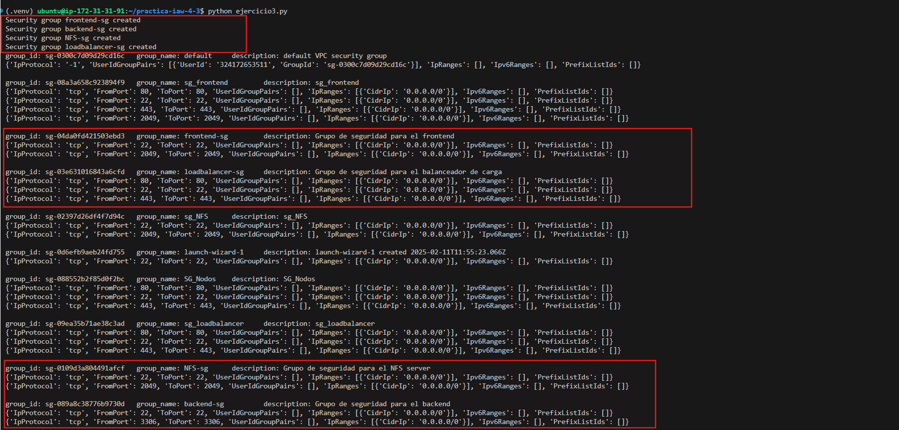
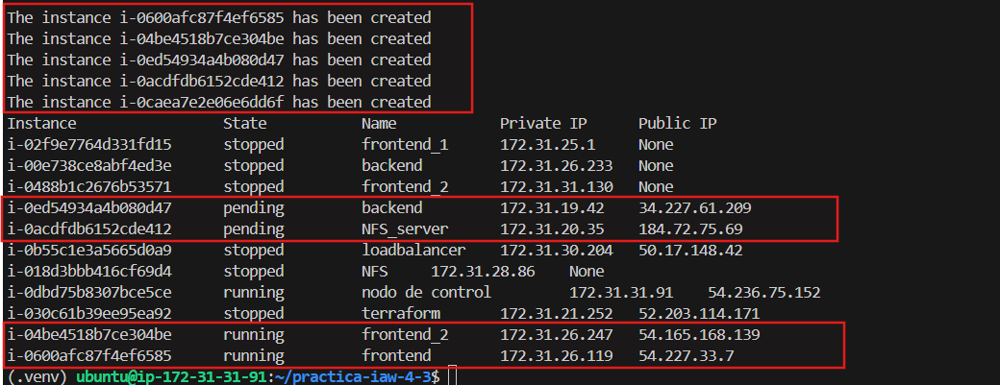
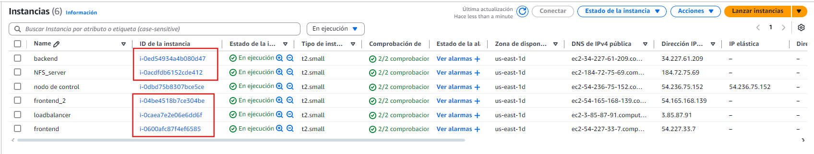

Practica IAW 4.3¶
Implantación de Wordpress en AWS utilizando una arquitectura de tres niveles con AWS SDK para Python¶
En esta practica vamos a realizar la creacion de la estructura de la Practica 1.11 - Implantación de Wordpress en AWS utilizando una arquitectura de tres niveles a traves de una plataforma de computacion en la nube mediante AWS SDK para Python (Boto3).
¿Qué es Boto3?¶
Boto3 es un SDK (Software Development Kit) de Python desarrollado por y para Amazon Web Services (AWS). Este SDK permite a los desarrolladores interactuar con los servicios de AWS para crear y gestionar recursos como grupos de seguridad o instancias EC2, a través de aplicaciones escritas en Python.
Infraestructura necesaria¶
La infraestructura propuesta consta de cinco máquinas virtuales, un balanceador de carga, una capa front-end formada por dos servidores web y un servidor NFS y una ultima capa back-end formada por un servidor, cada capa de la infraestrutura tendra su respectivo grupo de seguridad con reglas personalizadas.
Necesitaremos crear las siguientes máquinas virtuales y reglas:
- Balanceador: Acceso por SSH (puerto 22), HTTP (puerto 80) y HTTPS (puerto 443).
- Frontal Web 1: Acceso por SSH (puerto 22) y NFS (puerto 2049).
- Frontal Web 2: Acceso por SSH (puerto 22) y NFS (puerto 2049).
- Servidor NFS: NFS: Acceso por SSH (puerto 22) y NFS (puerto 2049).
- Servidor de Base de Datos: Acceso por SSH (puerto 22) y MySQL (puerto 3306).
Paso previos a la práctica¶
Creación de un entorno virtual para instalar Boto3¶
Creamos un entorno virtual.
python3 -m venv .venv
Activamos el entorno virtual.
. .venv/bin/activate
Instalamos el paquete boto3.
python3 -m pip install boto3
Instalación de AWS CLI¶
Para realizar la instalación de AWS CLI en un sistema operativo Linux sobre una arquitectura x86 de 64 bits, tenemos que ejecutar los siguientes comandos.
Paso 1. Descargamos un archivo .zip con la aplicación AWS CLI.
curl "https://awscli.amazonaws.com/awscli-exe-linux-x86_64.zip" -o "awscliv2.zip"
Paso 2. Descomprimimos el archivo que acabamos de descargar.
unzip awscliv2.zip
Paso 3. Ejectuamos el script de instalación.
sudo ./aws/install
Paso 4. Comprobamos que la instalación se ha realizado de forma correcta.
aws --version
Configuración de AWS CLI¶
Para configurar AWS CLI ejecutaremos el siguiente comando.
aws configure
Este comandos nos preguntará estos datos:
AWS Access Key ID [None]:
AWS Secret Access Key [None]:
Default region name [None]:
Default output format [None]:
Y creará un archivo de texto llamado credentials dentro del directorio home del usuario.
- En Linux/macOs el archivo estará en la ruta:
~/.aws/credentials. - En Windows estará en la ruta:
C:\Users\usuario\.aws\credentials.
Creación y configuracion de grupos de seguridad¶
Importamos el archivo aws_resource_functions y lo renombramos como aws
from common import aws_resource_functions as aws
Creamos el grupo de seguridad: frontend-sg¶
Definimos las reglas del grupo de seguridad y las almacenamos en una variable.
regla_front = [
{'CidrIp': '0.0.0.0/0', 'IpProtocol': 'tcp', 'FromPort': 22, 'ToPort': 22},
{'CidrIp': '0.0.0.0/0', 'IpProtocol': 'tcp', 'FromPort': 2049, 'ToPort': 2049}]
Definimos el nombre del grupo de seguridad y una descripción y lo almacenamos en una variable.
sg_front_name = "frontend-sg"
sg_front_descrip = "Grupo de seguridad para el frontend"
Ejecutamos el siguiente comando para crear el grupo de seguridad.
aws.create_security_group(sg_front_name, sg_front_descrip, regla_front)
Creamos el grupo de seguridad: backend-sg¶
Definimos las reglas del grupo de seguridad y las almacenamos en una variable.
regla_backend = [
{'CidrIp': '0.0.0.0/0', 'IpProtocol': 'tcp', 'FromPort': 22, 'ToPort': 22},
{'CidrIp': '0.0.0.0/0', 'IpProtocol': 'tcp', 'FromPort': 3306, 'ToPort': 3306}]
Definimos el nombre del grupo de seguridad y una descripción y lo almacenamos en una variable.
sg_backend_name = "backend-sg"
sg_backend_descrip = "Grupo de seguridad para el backend"
Ejecutamos el siguiente comando para crear el grupo de seguridad.
aws.create_security_group(sg_backend_name, sg_backend_descrip, regla_backend)
Creamos el grupo de seguridad: NFS-sg¶
Definimos las reglas del grupo de seguridad y las almacenamos en una variable.
regla_nfs = [
{'CidrIp': '0.0.0.0/0', 'IpProtocol': 'tcp', 'FromPort': 22, 'ToPort': 22},
{'CidrIp': '0.0.0.0/0', 'IpProtocol': 'tcp', 'FromPort': 2049, 'ToPort': 2049}]
Definimos el nombre del grupo de seguridad y una descripción y lo almacenamos en una variable.
sg_nfs_name = "NFS-sg"
sg_nfs_descrip = "Grupo de seguridad para el NFS server"
Ejecutamos el siguiente comando para crear el grupo de seguridad.
aws.create_security_group(sg_nfs_name, sg_nfs_descrip, regla_nfs)
Creamos el grupo de seguridad: loadbalancer-sg¶
Definimos las reglas del grupo de seguridad y las almacenamos en una variable.
regla_loadbalancer = [
{'CidrIp': '0.0.0.0/0', 'IpProtocol': 'tcp', 'FromPort': 22, 'ToPort': 22},
{'CidrIp': '0.0.0.0/0', 'IpProtocol': 'tcp', 'FromPort': 80, 'ToPort': 80},
{'CidrIp': '0.0.0.0/0', 'IpProtocol': 'tcp', 'FromPort': 443, 'ToPort': 443}]
Definimos el nombre del grupo de seguridad y una descripción y lo almacenamos en una variable.
sg_load_name = "loadbalancer-sg"
sg_load_descrip = "Grupo de seguridad para el balanceador de carga"
Ejecutamos el siguiente comando para crear el grupo de seguridad.
aws.create_security_group(sg_load_name, sg_load_descrip, regla_loadbalancer)
Creación y configuracion de las instancias de AWS¶
Definimos las variables que necesitaremos a la hora de crear la instancias.
ami = 'ami-04b4f1a9cf54c11d0'
instance_type = 't2.small'
key_name = 'vockey'
Creamos una intancia EC2 para el frontend¶
Definimos el nombre que tendra la instancia y la almacenamos en una variable.
inst_name_front = 'frontend'
Comprobamos que el grupo de seguridad existe para que no haya conflicto.
if aws.security_group_exists(sg_front_name) == False:
print('The security group does not exist')
exit()
Ejecutamos el siguiente comando para crear la instancia.
aws.create_instance(ami, 1, instance_type, key_name, inst_name_front, sg_front_name)
Creamos una intancia EC2 para el frontend_2¶
Definimos el nombre que tendra la instancia y la almacenamos en una variable.
inst_name_front2 = 'frontend_2'
Comprobamos que el grupo de seguridad existe para que no haya conflicto.
if aws.security_group_exists(sg_front_name) == False:
print('The security group does not exist')
exit()
Ejecutamos el siguiente comando para crear la instancia.
aws.create_instance(ami, 1, instance_type, key_name, inst_name_front2, sg_front_name)
Creamos una intancia EC2 para el backend¶
Definimos el nombre que tendra la instancia y la almacenamos en una variable.
inst_name_backend = 'backend'
Comprobamos que el grupo de seguridad existe para que no haya conflicto.
if aws.security_group_exists(sg_backend_name) == False:
print('The security group does not exist')
exit()
Ejecutamos el siguiente comando para crear la instancia.
aws.create_instance(ami, 1, instance_type, key_name, inst_name_backend, sg_backend_name)
Creamos una intancia EC2 para el NFS¶
Definimos el nombre que tendra la instancia y la almacenamos en una variable.
inst_name_NFS = 'NFS_server'
Comprobamos que el grupo de seguridad existe para que no haya conflicto.
if aws.security_group_exists(sg_nfs_name) == False:
print('The security group does not exist')
exit()
Ejecutamos el siguiente comando para crear la instancia.
aws.create_instance(ami, 1, instance_type, key_name, inst_name_NFS, sg_nfs_name)
Creamos una intancia EC2 para el loadbalancer¶
Definimos el nombre que tendra la instancia y la almacenamos en una variable.
inst_name_load = 'loadbalancer'
Comprobamos que el grupo de seguridad existe para que no haya conflicto.
if aws.security_group_exists(sg_load_name) == False:
print('The security group does not exist')
exit()
Ejecutamos el siguiente comando para crear la instancia.
aws.create_instance(ami, 1, instance_type, key_name, inst_name_load, sg_load_name)
Comprobación de la creación¶
Comprobamos que los grupos de seguridad se crearon correctamente en consola.

Comprobamos que los grupos de seguridad se crearon correctamente en en AWS.

Comprobamos que las instancias se crearon correctamente en consola.

Comprobamos que las instancia se crearon correctamente en AWS.
